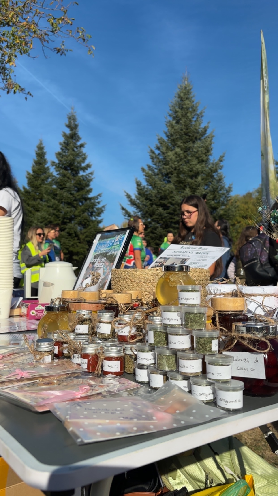

Din donațiile online și din standul nostru de la maraton! Vă mulțumim din suflet. Alătură-te nouă într-o cursă caritabilă de neuitat prin natură.
"Vă mulțumim enorm pentru ajutorul oferit de Asociația Chronartis, Cristi Danileț, Florin Stoican, Rodica Nicoleta Constanda și tuturor celor care au fost alături de noi la stand și pe traseu."

Valcea Forest Run este o oportunitate de networking și fundraising pentru proiecte locale. Cu sprijinul lor și prin intermediul Fundației Comunitare Vâlcea, am reușit să ne facem cunoscută povestea și să atragem oameni care să vină către noi cu noi oportunități de interviuri, conexiuni și mentorat în activitatea de strangere de fonduri.
Este o ocazie excelentă de a face mișcare în natură, de a petrece timp în aer liber alături de prieteni, familie, colegi sau chiar cu sufletul pereche, și de a contribui la cauze nobile din comunitatea noastră. Fiecare pas pe care îl faci contează și ajută la aducerea unui zâmbet pe chipul cuiva. Fie că ești un alergător experimentat sau abia începi, Vâlcea Forest Run are o cursă potrivită pentru fiecare nivel de pregătire. Profită de ocazie să-ți testezi limitele, să te bucuri de peisajele spectaculoase din jurul Râmnicului și, cel mai important, să faci o diferență reală.